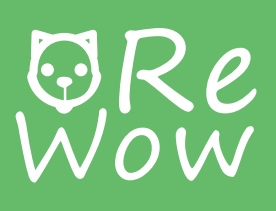

<mat-drawer-container class="container">
    <mat-drawer class="side" mode="side" opened>
        <div class="image-menu">
            
        </div>
        <div class="menu">
            <mat-selection-list [multiple]="false">
                <mat-list-option [routerLink]="['record', currentPet.id]">
                    <mat-icon mat-list-icon svgIcon="pet"></mat-icon>
                    Historia
                </mat-list-option>
                <mat-list-option [routerLink]="['appointment', currentPet.id]">
                    <mat-icon mat-list-icon svgIcon="calendar"></mat-icon>
                    Citas
                </mat-list-option>
                <mat-list-option [routerLink]="['store']">
                    <mat-icon mat-list-icon svgIcon="gift"></mat-icon>
                    Tienda
                </mat-list-option>
            </mat-selection-list>
           
        </div>
        <mat-slide-toggle>Cerrar sessión</mat-slide-toggle>
    </mat-drawer>
    <mat-drawer-content>
        <router-outlet></router-outlet>
    </mat-drawer-content>
</mat-drawer-container>